News
Selected Publications [Full List]
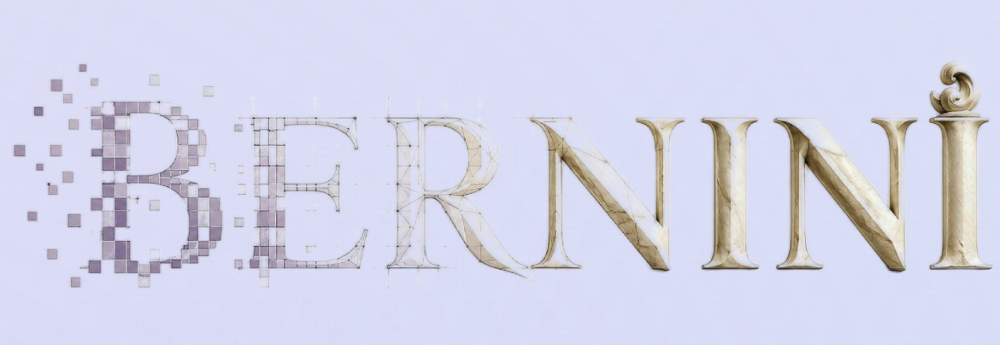
Bernini: Latent Semantic Planning for Video Diffusion
Chenchen Liu, Junyi Chen, Lei Li, Lu Chi, Mingzhen Sun, Zhuoying Li, Yi Fu, Ruoyu Guo, Yiheng Wu, Ge Bai, Zehuan Yuan
State-of-the-art open-source models for multimodal generation and editing
[arxiv paper] [project] [models]
GRN: Generative Refinement Networks for Visual Synthesis
Jian Han, Jinlai Liu, Jiahuan Wang, Bingyue Peng, Zehuan Yuan
A novel visual synthesis paradigm to support adaptive generation
[arxiv paper] [project]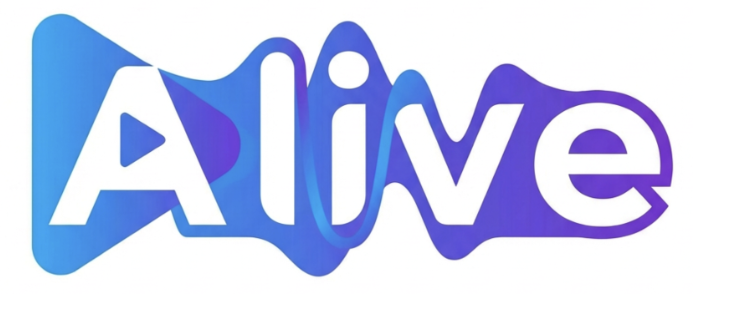
ALIVE: Animate Your World with Lifelike Audio-Video Generation
Ying Guo, Qijun Gan, Yifu Zhang, Jinlai Liu, Yifei Hu, Pan Xie, Dongjun Qian, Yu Zhang, Ruiqi Li, Yuqi Zhang, Ruibiao Lu, Xiaofeng Mei, Bo Han, Xiang Yin, Bingyue Peng, Zehuan Yuan
[arxiv paper] [project]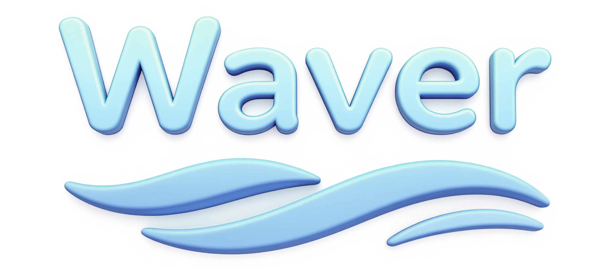
Waver: Wave Your Way to Lifelike Video Generation
Yifu Zhang, Hao Yang, Yuqi Zhang, Yifei Hu, Fengda Zhu, Chuang Lin, Xiaofeng Mei, Yi Jiang, Bingyue Peng, Zehuan Yuan
Rank top3 in T2V & I2V arena leaderboard
[arxiv paper] [project]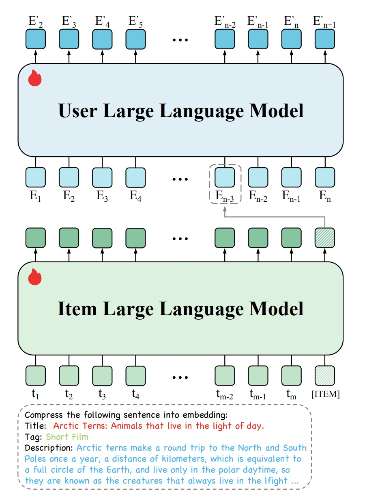
HLLM: Enhancing sequential recommendations via hierarchical large language models for item and user modeling
Junyi Chen, Lu Chi, Bingyue Peng, Zehuan Yuan
[arxiv paper] [code]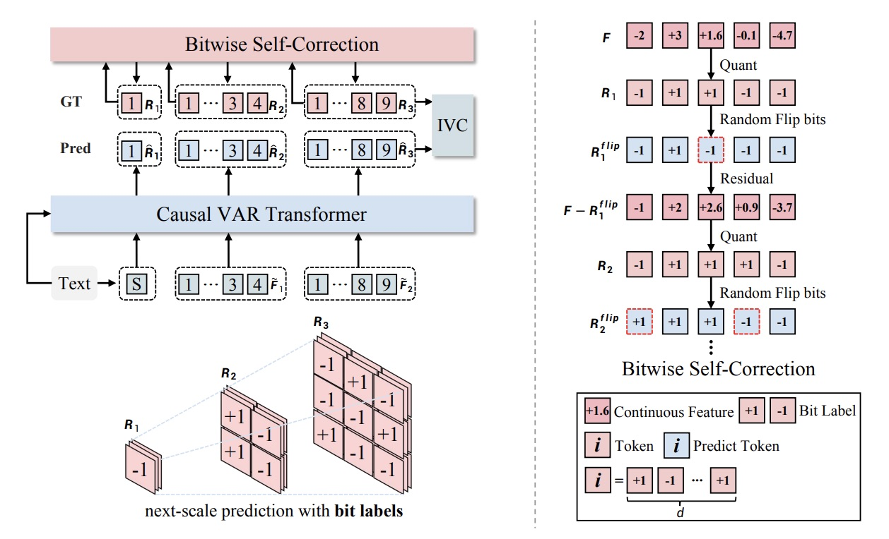
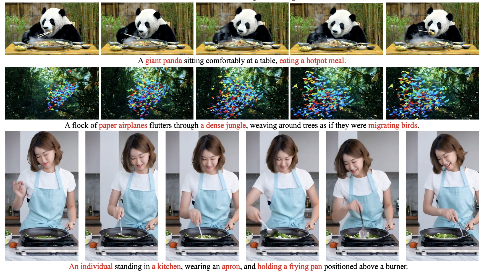
Goku: Flow Based Video Generative Foundation Models
Shoufa Chen, Chongjian Ge, Yuqi Zhang, Yida Zhang, Fengda Zhu, Hao Yang, Hongxiang Hao, Hui Wu, Zhichao Lai, Yifei Hu, Ting-Che Lin, Shilong Zhang, Fu Li, Chuan Li, Xing Wang, Yanghua Peng, Peize Sun, Ping Luo, Yi Jiang, Zehuan Yuan, Bingyue Peng, Xiaobing Liu
CVPR 2025
[paper] [project]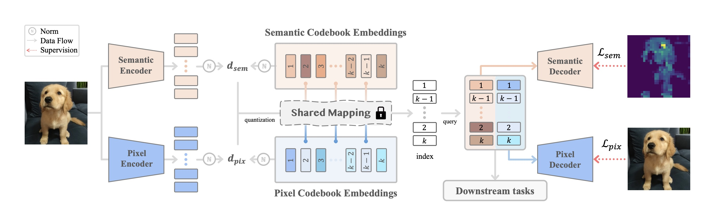
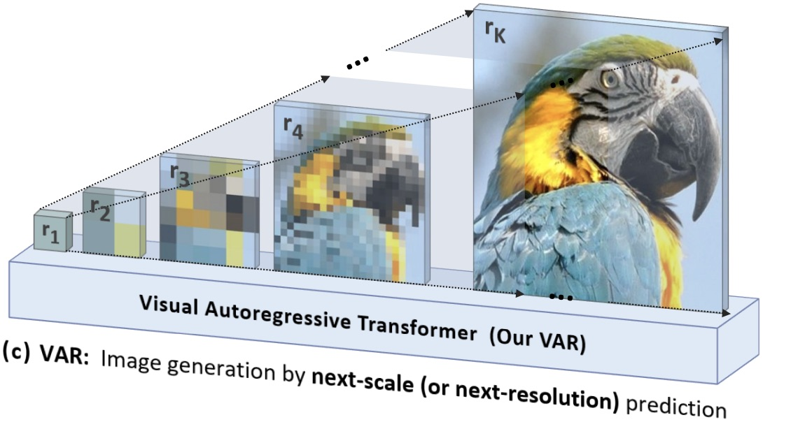
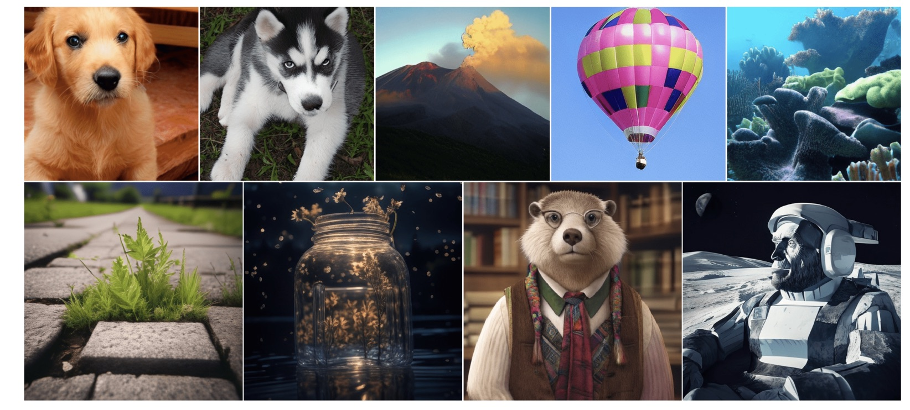
Autoregressive model beats diffusion: Llama for scalable image generation
Peize Sun, Yi Jiang, Shoufa Chen, Shilong Zhang, Bingyue Peng, Ping Luo, Zehuan Yuan
[arxiv paper] [code]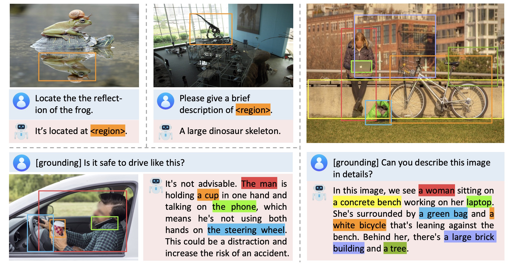
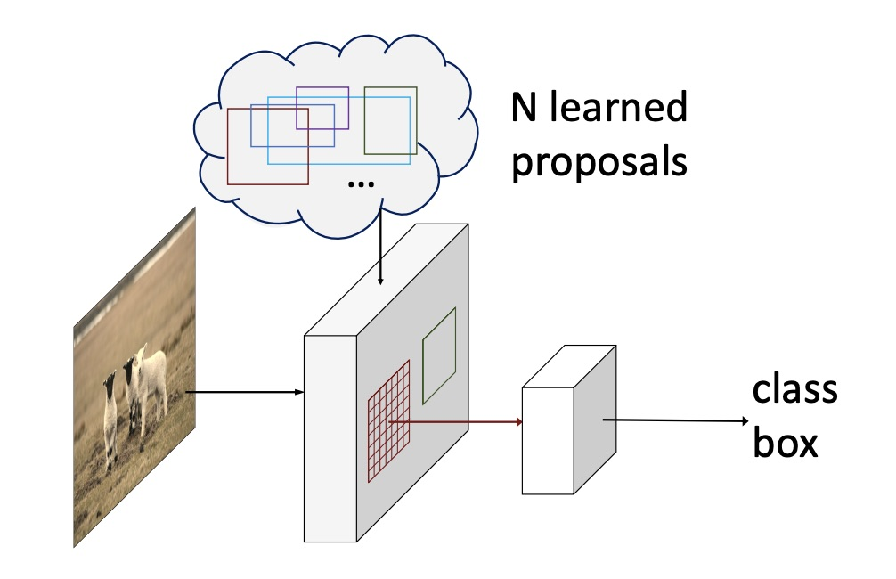